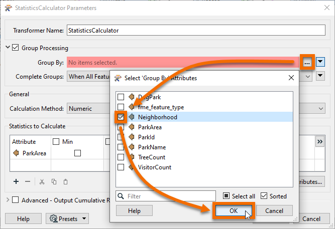
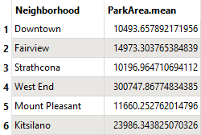

After completing this lesson, you’ll be able to:
You are continuing to work with the city parks data. You've been asked to find the average size of parks in each neighborhood. You know you can use the Group By parameter with an existing workspace to accomplish this task.
1) Start FME Workbench
Start FME Workbench (2022.0 or later) and open the starting workspace. This workspace currently calculates the total area of all parks in the city using the StatisticsCalculator.
You can view the total area by running the workspace and then inspecting the AttributeRenamer Output port. AverageParkArea is 70,248 m² for the entire dataset:

2) Set Group By in the StatisticsCalculator
Changing the workspace to calculate the park area by neighborhood is straightforward. View the parameters for the StatisticsCalculator transformer and click the '...' button next to the Group By parameter. Select the attribute called Neighborhood:

Click OK/Apply to apply the changes to the transformer.
3) Run the Workspace
Click on the StatisticsCalculator and then click on Run To This. Inspect the Summary output port in Visual Preview. The Summary output port creates a summarized table to any of the statistics you are calculating.
You should see that each neighborhood now has its own value for ParkArea.mean (renamed to AverageParkArea by the AttributeRenamer):
